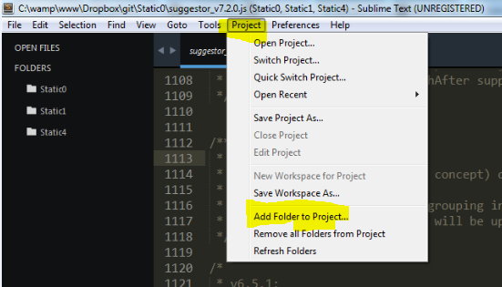
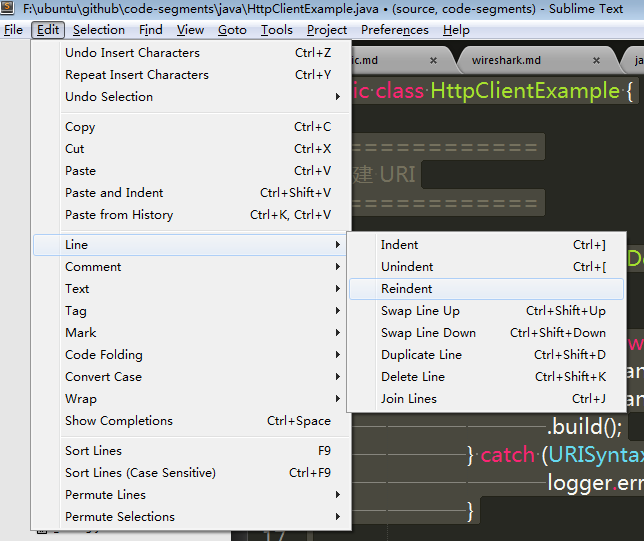

| 快捷键 | 说明 |
|---|---|
Ctrl + N |
新建 |
Ctrl + W |
关闭 |
Ctrl + K,B |
显示/隐藏 sidebar |
Ctrl + PageUp/PageDown |
切换标签页 |
Ctrl + Shift + P |
设置某种语法高亮 |
Ctrl + Shift + F |
在某个文件(夹)内全局搜索关键字 |
Ctrl + P |
Goto Anything |
Ctrl + P 可以键入的关键字:
file.js opens that file:100 jumps to line 100 in current filefile.js:100 jumps to line 100 in file.js@loadFile lists all files with classes/functions named loadFile (shortcut: Ctrl+R)file.js@loadFile jumps to a loadFile() in file.js
